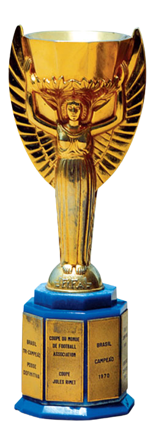
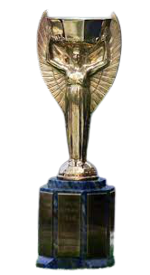
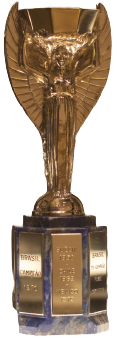
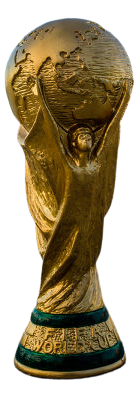
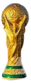

Confederação Brasileira de Futebol

Federação Internacional de Futebol

Campeonatos
WolFutebol
Confederação Brasileira de Futebol
Federação Internacional de Futebol
Campeonatos

Confederação Brasileira de Futebol (CBF) é a entidade máxima do futebol no Brasil. Fundada em 8 de junho de 1914, sob a denominação Federação Brasileira de Sports (FBS),[1] a CBF, tal como existe hoje, foi fundada em 24 de setembro de 1979,[2] quando ocorreu a desmembração da Confederação Brasileira de Desportos (CBD), entidade sucessora da FBS, que além de comandar o futebol, aglutinava os demais esportes olímpicos praticados em território brasileiro.[3] A CBF é responsável pela organização de campeonatos de alcance nacional. Também administra a Seleção Brasileira de Futebol Masculino, cinco vezes campeã mundial, e a Feminina, vice-campeã mundial.


1958
1962
1970
1994
2002


RM
Seleção
Pontos totais
RM
Seleção
Pontos totais
1

1832.33
1

2110.25
2

1820.36
2

2088.72
3

1779.24
3

2073.09
4

1750.52
4

2047.52
5

1750.16
5
2038.68


O Campeonato Brasileiro de Futebol, também conhecido como Campeonato Brasileiro, Brasileirão e Série A, é a liga brasileira de futebol profissional entre clubes do Brasil, sendo a principal competição futebolística no país. É por meio dela que são indicados os representantes brasileiros para a Copa Libertadores da América (juntamente com o campeão da Copa do Brasil).
Ler maisA Copa Intelbras do Brasil é uma competição nacional de futebol do Brasil. É jogada nos moldes da Copa da Inglaterra, Taça de Portugal, Copa do Rei, Copa da Escócia, entre outras.Inicialmente a Copa do Brasil foi disputada por 32 clubes, passou a 40 em 1996, o número foi crescendo até chegar em 69 no ano de 2000, vindo a se estabilizar em 64 após 2001, número que se manteve até 2012, disputada pelos 26 estados brasileiros e pelo Distrito Federal
Ler maisA Copa Libertadores da América ou Taça Libertadores da América (em espanhol: Copa Libertadores de América), oficialmente CONMEBOL Libertadores, é a principal competição de futebol entre clubes profissionais da América do Sul, organizada pela Confederação Sul-Americana de Futebol (CONMEBOL) desde 1960. É a competição de clubes mais importante do continente, sendo um dos torneios mais prestigiados do mundo, juntamente com a Liga dos Campeões da UEFA.
Ler maisA Copa Sul-Americana (em espanhol: Copa Sudamericana), cujo nome oficial atual é CONMEBOL Sul-Americana,[1] é uma competição continental de clubes de futebol da América do Sul, organizada pela Confederação Sul-Americana de Futebol (CONMEBOL) desde 2002. É a segunda competição mais prestigiada entre clubes no continente sul-americano, inferior apenas à Copa Libertadores da América.
Ler mais
A Liga dos Campeões da UEFA (em inglês: UEFA Champions League) é uma competição anual de clubes de futebol a nível continental, organizada pela União das Associações Europeias de Futebol (UEFA) e disputada por clubes europeus. É um dos torneios mais prestigiados do mundo e a competição de clubes mais prestigiada no futebol europeu, disputada pelas equipas mais bem classificadas nos respectivos campeonato nacionais na época anterior, sendo o número de vagas atribuídos consoante o ranking da UEFA.
Ler maisA Liga Europa da UEFA (em inglês: UEFA Europa League) é uma competição continental de clubes de futebol organizada pela União das Associações Europeias de Futebol (UEFA), a segunda mais prestigiada após à Liga dos Campeões da UEFA. Criada em 1971, era chamada de Taça da UEFA (português europeu) ou Copa da UEFA (português brasileiro), até que em 2009 o nome foi alterado para a versão atual.
Ler maisA Fußball-Bundesliga (em português: Liga Federal de Futebol), é uma liga profissional de futebol da Alemanha. É a principal competição de futebol do país.A Bundesliga foi originalmente fundada em 1962 na cidade de Dortmund pela Deutscher Fußball-Bund (Associação Alemã de Futebol), mas agora é controlada pela Deutsche Fußball Liga (Liga Alemã de Futebol), sendo a liga mais lucrativa da Europa.
Ler maisA Primera División da Liga de Fútbol Profesional, conhecida como LaLiga ou LaLiga Santander, por razões de patrocínio, ou ainda Liga das Estrelas, é a primeira divisão da liga espanhola de futebol profissional entre clubes da Espanha. É disputada por vinte clubes, sob o sistema de disputa de pontos corridos, onde os clubes jogam entre si no sistema de turno e returno.
Ler maisA Ligue 1 (até 2002 chamada Division 1), também conhecida como Ligue 1 Uber Eats por razões de patrocínio, é a primeira divisão da liga francesa de futebol profissional entre clubes da França, sendo a principal competição futebolística no país. Organizada pela Ligue de Football Professionnel desde 1929.
Ler maisPremier League (em português: Primeira Liga) é uma liga profissional de futebol da Inglaterra e está no topo do sistema de ligas do futebol inglês, sendo a principal competição de futebol do país.É disputada por vinte clubes no sistema de pontos corridos, em que no final de cada temporada os quatro melhores colocados participam da Liga dos Campeões da UEFA, e os três piores são rebaixados para a EFL Championship, dando lugar aos três melhores desta competição.
Ler maisA Serie A (pronúncia italiana: [ˈsɛːrje ˈa][1]), também chamada de Serie A TIM devido ao patrocínio da TIM, éuma competição de clubes de futebol localizados no topo do sistema da Liga Italiana de Futebol.[2] O vencedor é premiado com o Scudetto e a Coppa Campioni d'Italia.
Ler maisA Primeira Liga (Liga Portugal bwin por razões de patrocínio) é o principal escalão do sistema de ligas de futebol de Portugal. Criada na época 1934–35 pela Federação Portuguesa de Futebol, é organizada pela Liga Portuguesa de Futebol Profissional desde a temporada 1995–96. É disputada por dezoito clubes, num sistema de promoção e despromoção com a Segunda Liga.
Ler mais